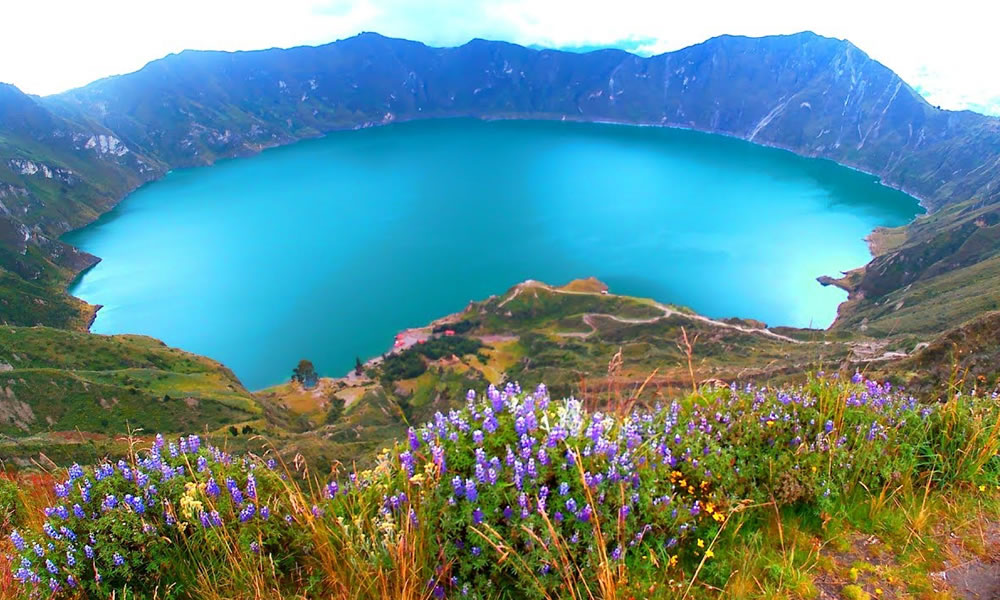
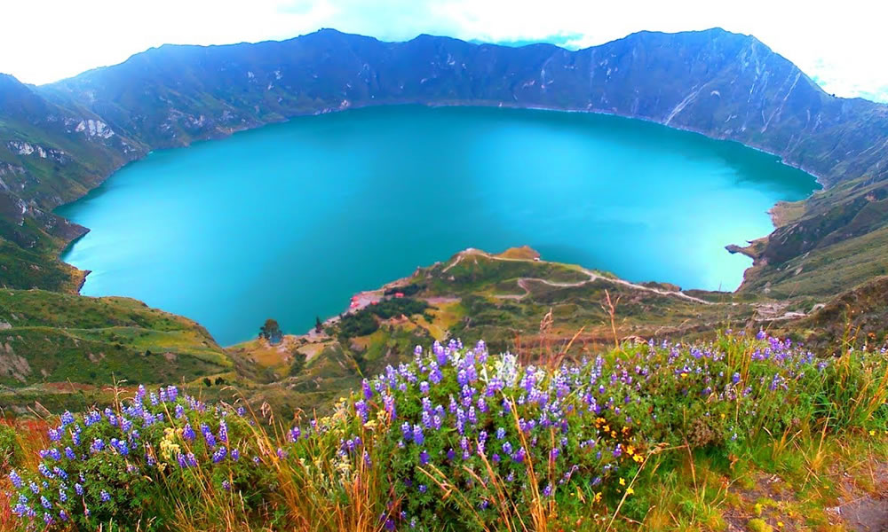

LUGARES TURÍSTICOS EN ECUADOR
Descubre destinos únicos y maravillosos
¿Por qué Ecuador es turístico?
Ecuador es un país con una increíble diversidad geográfica y cultural, lo que lo convierte en un destino turístico único. A pesar de su tamaño relativamente pequeño, cuenta con cuatro regiones naturales muy distintas: la Costa, la Sierra, la Amazonía y las Islas Galápagos. Esta variedad de paisajes permite a los turistas disfrutar de playas paradisíacas, volcanes majestuosos, selvas exuberantes y ciudades coloniales en un solo viaje.
Islas Galápagos
Un paraíso natural con paisajes volcánicos y playas vírgenes, hogar de especies únicas de flora y fauna.
Ver másVolcán Cotopaxi
Uno de los volcanes activos más altos del mundo, ubicado en el Parque Nacional Cotopaxi, con vistas espectaculares.
Ver másLaguna Quilotoa
Un cráter volcánico con una impresionante laguna de aguas turquesas, ideal para senderismo.
Ver másParque Nacional Cajas
Cerca de Cuenca, este parque ofrece paisajes andinos con lagunas glaciares y diversidad de fauna.
Ver másBosque Nublado de Mindo
Un lugar perfecto para los amantes de la naturaleza, con cascadas, aves exóticas y exuberante vegetación.
Ver másParque Nacional Yasuni
Uno de los lugares con mayor biodiversidad del planeta, en plena Amazonía.
Ver más 

Más lugares para visitar
Baños y sus Cascadas
La ciudad de Baños es famosa por sus cascadas, como la Cascada del Pailón del Diablo y la Ruta de las Cascadas.Parque Nacional Podocarpus
Ubicado en el sur de Ecuador, ofrece paisajes de montaña y bosque nublado con una gran diversidad biológica.Isla de la Plata
Conocida como la "pequeña Galápagos", ofrece paisajes costeros y una rica vida marina.Estos lugares destacan por su belleza natural y paisajes únicos.